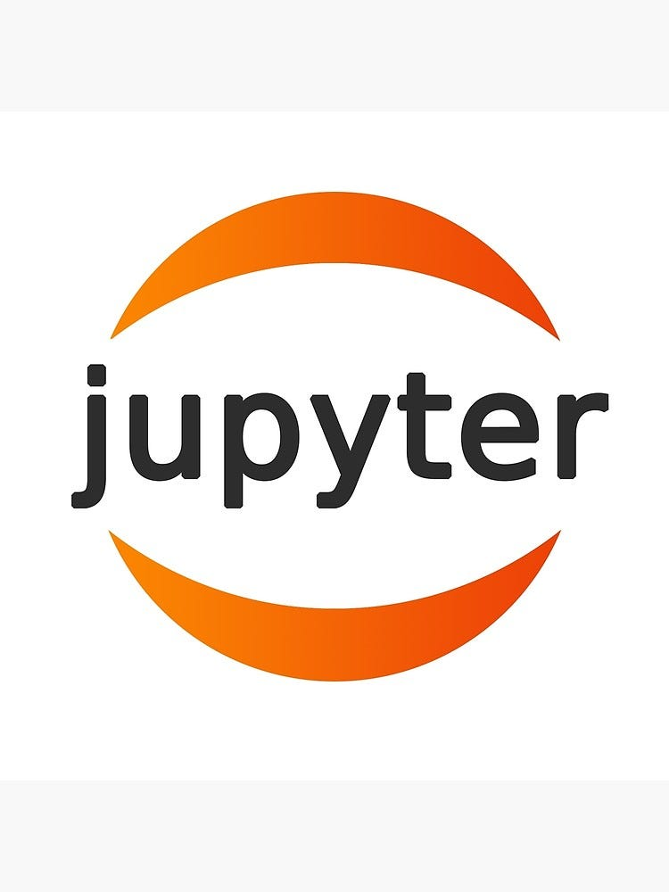
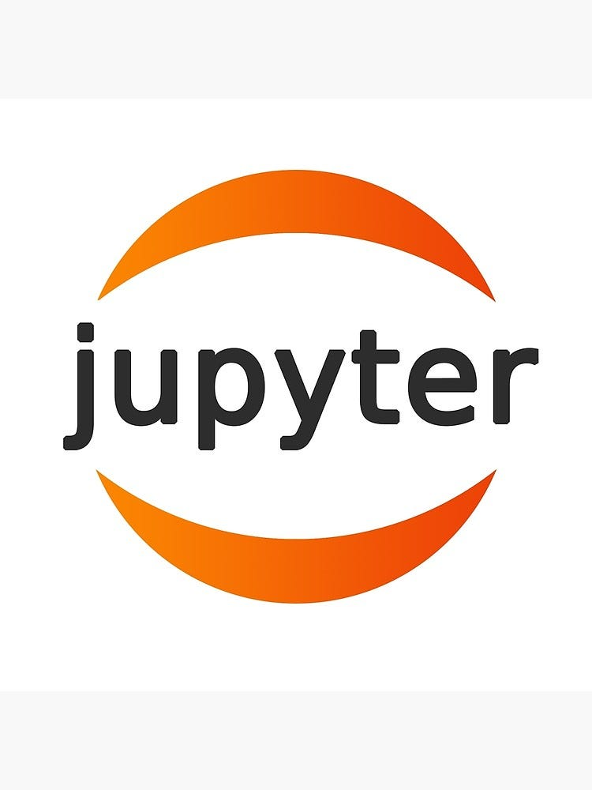

Hello!
About me
Mahasiswa Teknik Informatika Universitas Mercu Buana dengan IPK 3.70. Memiliki pengalaman dalam pengembangan aplikasi berbasis web dan mobile, serta keahlian dalam analisis data dan desain UI/UX. Aktif dalam proyek-proyek inovatif dan berhasil menjadi finalis Gemastik 2024 divisi Software Development.
Details
Name:
Andya Raihan Setiawan
Age:
21 years
Location:
Bukit Gading Cisoka Blok A4 No 35, Kabupaten Tangerang.
Gmail:
raihansetiawan203@gmail.com
Whatsapp
:
+6289630241464


 
